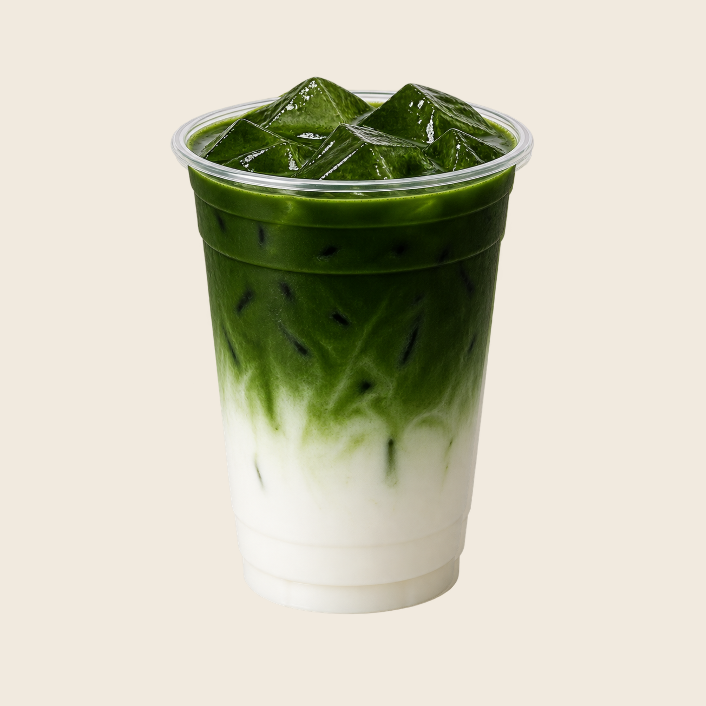
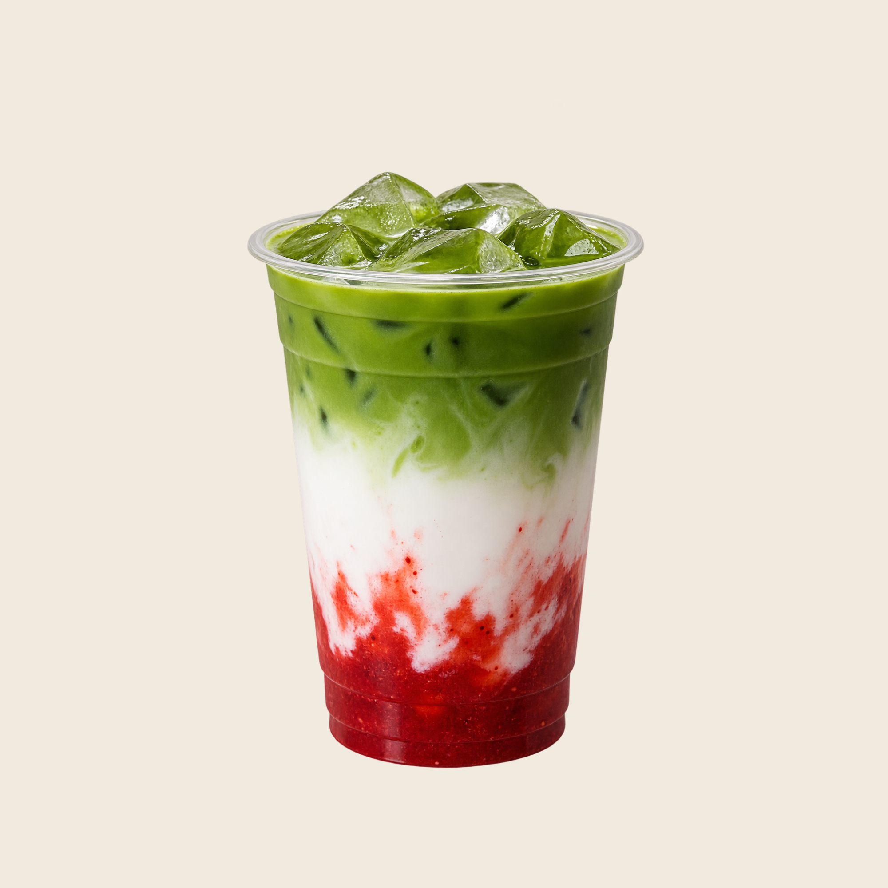
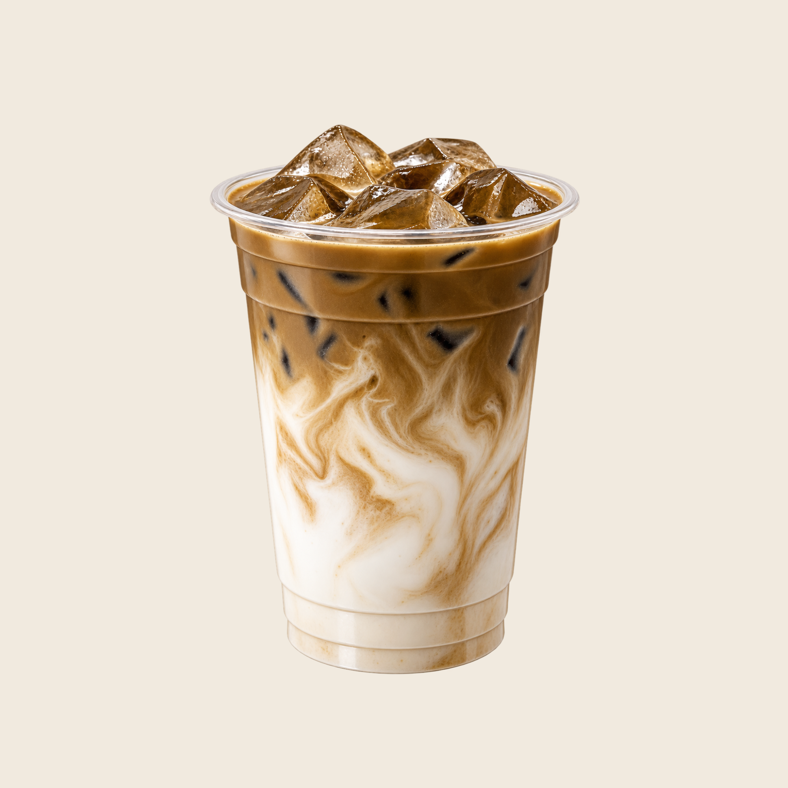

THE MATCHA LAB
Our Menu
Handcrafted drinks inspired by Japanese tea culture and prepared fresh at every Matcha Lab pop-up.
Matcha & Hojicha
All drinks are served in a 16 oz size and prepared fresh to order.

Double Matcha Latte
16 oz
A richer matcha latte made with extra matcha for a stronger and more concentrated flavor.

Strawberry Matcha Latte
16 oz
A layered matcha latte combining Japanese matcha with our house-made strawberry purée for a fresh, fruity sweetness.

Hojicha Latte
16 oz
A smooth latte made with Japanese roasted green tea for a warm and toasty flavor.
Made Fresh at Our Pop-Ups
Each drink is handcrafted to order with the goal of making Japanese matcha and hojicha approachable and enjoyable for our community.
Menu availability may vary by pop-up event.
Find Our Next Pop-Up